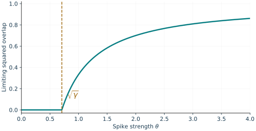
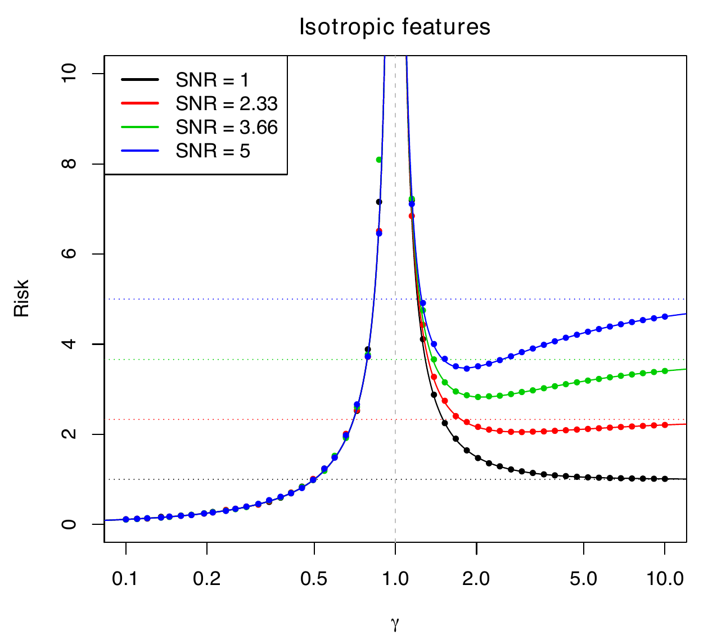
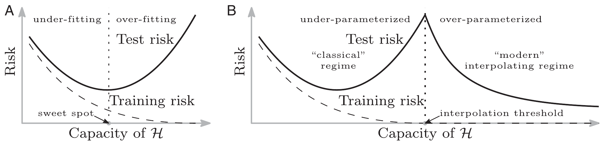
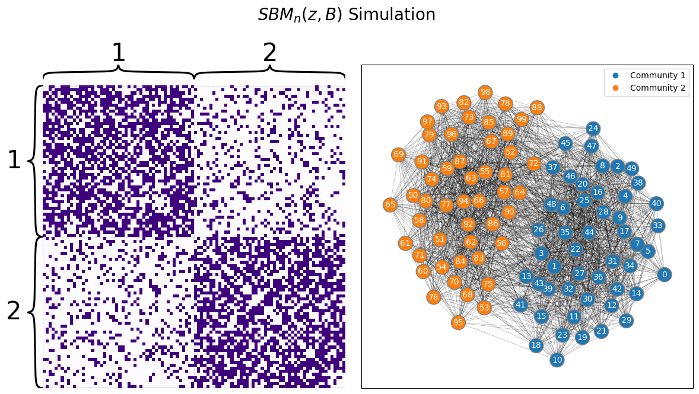

These notes support STAT 709 at the University of Wisconsin–Madison. Use them alongside the cited textbooks; corrections and questions are welcome.
Exam scope for this lecture.
Section 3 (community detection) and its linked Exercises 4 and 5 are optional and will not be tested in exams. Their priority labels guide reading within this optional material. Other high- and mid-priority material remains in examination scope.
Dimension. Dimension changes the quality of familiar estimators.
Applications. We use covariance error and eigengaps to study PCA, separate prediction risk into bias and variance on both sides of interpolation, and use eigenvectors to recover network communities.
Main route. The main route develops PCA behavior as dimension grows and minimum-norm regression.
Optional detail. The detailed interpolation-risk curves and all of Section 3 on community detection are optional self-study.
Recap from earlier lecturesFrom Lectures 1, 7, 8, 13 and 16: spectra and regression · 1 min
Reminder only: this block introduces no new exam requirements.
Random matrices and covariance. Operator-norm bounds control sample-covariance error; the dimension-to-sample-size ratio matters. Used in Section 1.
Weyl and PCA. Eigenvalue perturbation controls spectral error; leading directions describe maximal projected variance. Used in Section 1.
Minimum-norm interpolation. Among exact fits, the minimum-norm fit lies in the row space of the design. Used in Section 2.
OLS projection. Least squares splits the observation vector into its fitted component and orthogonal residual. Used in Section 2.
Spectral relaxation. Community assignments can be approximated by eigenvectors of a suitable adjacency matrix. Used in optional Section 3.
An asterisk in a topic heading marks optional material; the priority labels specify the reading scope.
Learning goals
Distinguish fixed- and growing-dimension PCA regimes.
Interpret the PCA phase transition and squared overlap.
Compare regression risk below and above interpolation.
Explore spectral community detection as optional material.
For convenience, we refer to the Euclidean norm as \(\left\|\cdot\right\|\) and \(\left\|\cdot\right\|_2\). As before, we use \(c\) or \(C\) to denote a positive absolute constant. We write \(c_K\) or \(C_K\) to denote a scalar that depends only on \(K\). In particular, if \(K\) is a constant, then \(c_K\) and \(C_K\) are both constants. We denote by \(\mathbb{S}^{n-1}\) the unit sphere: \(\{x\in \mathbb{R}^n: \left\|x\right\|= 1\}\). The abbreviation psd means positive semidefinite.
1. Principal component analysis
In this section, we examine a classical statistical method, principal component analysis (PCA), from a theoretical perspective. We will focus mostly on estimation consistency.
Suppose that \(x_1,\ldots, x_n \stackrel{\iid}{\sim} X_0\) are our observed data where \(\mathbb{E}[X_0] = 0\) and the second moments of \(X_0\) exist. Denote \(\Sigma = \mathrm{Cov}(X_0)\). Let the eigen-decomposition of \(\Sigma\) be \[\Sigma = \sum_{j=1}^p \lambda_j u_j u_j^\top\] where \(\lambda_{1}\geq\lambda_{2}\geq...\geq\lambda_{p} \ge 0\) are in descending order by convention, and \(u_{1},u_{2},...u_{p}\in\R^{p}\) form an orthonormal basis. We form the empirical covariance1 \(\hat \Sigma\) and perform eigen-decomposition correspondingly \[\hat \Sigma = \frac{1}{n}\sum_{i=1}^n x_i x_i^\top, \qquad \hat \Sigma = \sum_{j=1}^p \hat \lambda_j \hat u_j \hat u_j^\top\] where \(\hat \lambda_{1}\geq \hat \lambda_{2}\geq...\geq \hat \lambda_{p} \ge 0\) are in descending order by convention, and \(\hat u_{1}, \hat u_{2},...\hat u_{p}\in\R^{p}\) form an orthonormal basis. By definition, \(u_{1},u_{2},...u_{p}\) and \(\hat u_{1}, \hat u_{2},...\hat u_{p}\) are all unit vectors.
Population. The vector \(u_{1}\) is called the 1st population principal direction, and \(x_{1}^{\top}u_{1},x_{2}^{\top}u_{1},...x_{n}^{\top}u_{1}\) are called the 1st population principal component scores.
Sample. Similarly, the vector \(\hat u_{1}\) is called the 1st (empirical) principal direction, and \(x_1^\top\hat u_1,x_2^\top\hat u_1,\ldots,x_n^\top\hat u_1\) are called the 1st empirical principal component scores.
Uses. PCA is useful for dimension reduction, visualization, clustering, etc.
Instructor’s NoteThe gap is the reference scale
If the top two directions explain almost the same variance, a small perturbation can choose a very different winner. With a clear gap, the winning direction is stable. The sign is only a label for that direction: reversing an arrow does not change its axis.
1.1. Fixed dimension
In the classical regime, the dimension \(p\) is fixed, and PCA generally yields consistent estimators. We will prove a simple consistency result.
Suppose that \(\lambda_1 > \lambda_2\). Then as \(n \to \infty\), we have \[\max_{k \le p} |\hat \lambda_k - \lambda_k| \stackrel{p}{\longrightarrow} 0, \qquad \min_{s \in \{\pm 1\}}\big\|s \hat u_1 - u_1 \big\|_2 \stackrel{p}{\longrightarrow} 0\,.\]
Sign choice. First, recall that eigenvectors are not unique for an eigenvalue: any \(u=t u_1\) with \(t\ne0\) solves \(\Sigma u = \lambda_1 u\), so both \(u_1\) and \(-u_1\) are unit top eigenvectors corresponding to \(\lambda_1\).
Error measure. This is why in the theorem statement, we have the freedom to choose a sign \(s \in \{ \pm 1\}\) when measuring the estimation error of the top principal direction2.
Terminology. Sometimes this flexibility of choosing a sign is called “up to sign.”
Tied eigenvalues. Second, if we don’t assume \(\lambda_1 > \lambda_2\), then the first eigenvalue may have multiplicity more than \(1\): \(\lambda_1 = \lambda_2 = \cdots = \lambda_k\).
Rotated bases. In this case, any vector \(u=[u_1,\ldots,u_k]a\) with \(\|a\|_2=1\) is a top eigenvector; an orthogonal matrix \(R\in O(k)\) rotates the entire basis \([u_1,\ldots,u_k]R\) within that eigenspace. Every column of the rotated basis still satisfies \(\Sigma u=\lambda_1u\).
Estimation target. In this case, we need to study the consistency of the top eigenspace \(\mathrm{span}\{u_1,\ldots,u_k\}\) under an appropriate distance for subspaces.
Proof. By the LLN, we have \[\hat \Sigma \stackrel{p}{\longrightarrow} \Sigma\] By Weyl’s inequality, \[\max_{k \le p} |\hat \lambda_k - \lambda_k| \le \| \hat \Sigma - \Sigma \|_{\mathrm{op}},\] so \(\| \hat \Sigma - \Sigma \|_{\mathrm{op}} \stackrel{p}{\to} 0\) implies \(\max_{k \le p} |\hat \lambda_k - \lambda_k| \stackrel{p}{\to} 0\). We can prove the consistency of the top eigenvector in a similar fashion, by using a well-known perturbation bound as stated below. ◻
Let \(u_1, \tilde{u}_{1}\) be the first eigenvectors of two real symmetric matrices \(\Sigma,\widetilde\Sigma\in\R^{p\times p}\) respectively normalized such that \(\left\|u_{1}\right\|_2=\left\|\tilde u_{1}\right\|_2=1\). Here \(\lambda_1,\lambda_2\) are the two largest eigenvalues of \(\Sigma\). Assuming \(\lambda_1 > \lambda_2\), we have the following deterministic result \[\min\limits_{s\in\{\pm1\}}\left\|s\tilde{u}_{1}-u_{1}\right\|_2\leq\frac{2\sqrt{2}\,\left\|\tilde{\Sigma}-\Sigma\right\|_{\mathrm{op}}}{\lambda_{1}-\lambda_{2}}.\]
Proof. If \(\lambda_1 - \lambda_2 < 2\|\tilde{\Sigma}-\Sigma\|_{\mathrm{op}}\), then we have trivial bound \[\mathrm{LHS} \le \sqrt{2} \le \sqrt{2} \cdot \frac{2\|\tilde{\Sigma}-\Sigma\|_{\mathrm{op}}}{\lambda_1 - \lambda_2} = \mathrm{RHS} .\] In the proof below, we assume \(\lambda_1 - \lambda_2 \ge 2\|\tilde{\Sigma}-\Sigma\|_{\mathrm{op}}\). Denote the normalized eigenvectors of \(\Sigma\) by \(u_1,u_2,\ldots,u_p\) so that \(U = [u_1,u_2,\ldots,u_p]\) is an orthogonal matrix. As usual, we write \(\langle u, v \rangle = u^\top v\) for vectors \(u,v\).
We pick \(s_0 \in \{\pm 1\}\) so that \(s_0 = 1\) if \(\langle \tilde u_1, u_1\rangle \ge 0\) and \(s_0 = -1\) otherwise. Observe \[\begin{aligned} \min\limits_{s\in\{\pm1\}}\left\|s\tilde{u}_{1}-u_{1}\right\|_2 &\le \left\|s_0\tilde{u}_{1}-u_{1}\right\|_2 = \sqrt{2 - 2\langle s_0 \tilde u_1, u_1 \rangle} \\ &\le \sqrt{2 - 2\langle s_0 \tilde u_1, u_1 \rangle} \cdot \sqrt{1 + \langle s_0 \tilde u_1, u_1 \rangle} \\ &= \sqrt{2}\sqrt{1 - \langle s_0 \tilde u_1, u_1 \rangle^2} \\ &= \sqrt{2}\sqrt{1 - \langle \tilde u_1, u_1 \rangle^2}\,. \end{aligned}\] Since \(\tilde u_1\) is a unit vector and \(U\) is an orthogonal matrix, \[1 = \left\|\tilde u_1\right\|_2^2 = \left\|U^\top \tilde u_1\right\|_2^2 = \langle u_1, \tilde u_1 \rangle^2 + \sum_{k=2}^p \langle u_k, \tilde u_1 \rangle^2.\] It suffices to show \[\sum_{k>1} \langle u_k, \tilde u_1 \rangle^2 \le \frac{4\left\|\tilde{\Sigma}-\Sigma\right\|_{\mathrm{op}}^2}{(\lambda_{1}-\lambda_{2})^2}\] By the definition of eigenvectors, \[\begin{aligned} \tilde \Sigma \tilde u_1 &= \tilde \lambda_1 \tilde u_1 \\ \Sigma u_k &= \lambda_k u_k, \qquad \text{for any }k. \end{aligned}\] It follows that \[\begin{aligned} \langle u_k, \tilde \Sigma \tilde u_1 \rangle &= \tilde \lambda_1 \langle u_k, \tilde u_1\rangle \\ \langle \tilde u_1, \Sigma u_k \rangle &= \lambda_k \langle u_k, \tilde u_1 \rangle \qquad \text{for any }k. \end{aligned}\] Since \(\tilde \Sigma\) and \(\Sigma\) are symmetric, taking the difference we find
\[\langle u_k, (\tilde \Sigma - \Sigma) \tilde u_1 \rangle = (\tilde \lambda_1 - \lambda_k) \langle u_k, \tilde u_1\rangle.\]
(1)By Weyl’s inequality, \(\tilde \lambda_1 - \lambda_1 \ge - \|\tilde{\Sigma}-\Sigma\|_{\mathrm{op}}\), so for \(k > 1\)
\[\tilde \lambda_1 - \lambda_k \ge \tilde \lambda_1 - \lambda_2 \ge \lambda_1 -\lambda_2 - \|\tilde{\Sigma}-\Sigma\|_{\mathrm{op}} \ge \frac{1}{2} (\lambda_1 - \lambda_2)\]
(2)where we used \(\lambda_1 - \lambda_2 \ge 2\|\tilde{\Sigma}-\Sigma\|_{\mathrm{op}}\). Thus, using the inequality in (2) for (1), we have \[\sum_{k>1} \langle u_k, \tilde u_1\rangle^2 \le \sum_{k>1}\frac{\langle u_k, (\tilde \Sigma - \Sigma) \tilde u_1 \rangle^2}{(\tilde \lambda_1 - \lambda_k)^2} \le \frac{ 4\left\|(\tilde \Sigma - \Sigma) \tilde u_1 \right\|_2^2}{(\lambda_1 - \lambda_2)^2} \le \frac{ 4 \left\|(\tilde \Sigma - \Sigma)\right\|_{\mathrm{op}}^2}{(\lambda_1-\lambda_2)^2}\] In the above derivation, we used basic inequalities \[\sum_{k>1} \langle u_k, v \rangle^2 \le \sum_{k=1}^p \langle u_k, v \rangle^2 = \| v\|^2_2\] for any vector \(v\) and \(\|Av\|_2\le\|A\|_{\mathrm{op}}\|v\|_2\) (here \(v\) is unit). ◻
For the first PCA consistency assertion, finite second moments give integrability of every coordinate product by Cauchy–Schwarz. The LLN applies entrywise; in fixed dimension this implies operator-norm convergence. A fixed positive eigengap and the displayed perturbation bound then complete the eigenvector proof.
An eigengap stabilizes direction.
A small operator perturbation gives a small top-eigenvector error, up to sign, when divided by a positive population eigengap. A shrinking gap can defeat consistency even if the covariance error tends to zero.
See Exercise 1 in Section 6 for the full statement and complete solution.
1.2. Growing dimension
Now, we consider the scenario where \(p\) is allowed to grow with \(n\). Let us write \(p = p_n\) and \(\Sigma = \Sigma_n\) to emphasize the dependence on \(n\). We need certain assumptions on the tail behavior of \(X_0\). For simplicity, assume that \(X_0 \sim N(0, \Sigma_n)\), although it is possible to relax to subgaussian random vectors.
We should note that when \(p_n\) grows, the covariance matrix has \(p_n\) eigenvalues. We usually impose additional structure on \(\Sigma_n\) to facilitate theoretical analysis. One common structure is the spiked model:
\[\Sigma_n = (\lambda_1 - \lambda_2) u_1 u_1^\top + \lambda_2 I_{p_n}\]
(3)Under this assumption, the eigenvalues of \(\Sigma_n\) are \(\lambda_1\) and \(\lambda_2\) with multiplicity \(p_n-1\). To measure consistency, we use the usual Euclidean norm. Note \[\frac{1}{2} \min\limits_{s\in\{\pm1\}}\left\|s\hat{u}_{1}-u_{1}\right\|_2^2 = 1 - \left|\langle\hat{u}_{1},u_{1}\rangle\right|.\]
Inconsistency of PCA in high dimensions.
We adopt the asymptotic view as before. We have
Assume \(\| \Sigma_n \|_{\mathrm{op}} \le C\) and \(\lambda_{1}(\Sigma_{n})-\lambda_{2}(\Sigma_{n})\geq \kappa >0\) holds for certain constants \(C\) and \(\kappa\) independent of \(n\). Suppose that \(p_n / n \rightarrow \gamma\) where \(\gamma \in [0, \infty)\) is a constant.
if \(\gamma = 0\), then \[\min\limits_{s\in\{\pm1\}}\left\|s\hat{u}_{1}-u_{1}\right\|_2 \stackrel{p}{\longrightarrow} 0 \quad\text{as }n\rightarrow\infty.\qquad\text{(consistency of PCA)}\]
if \(\gamma >0\), then under (3) with fixed \(0<\lambda_2<\lambda_1\), we have \(\left|\langle\hat{u}_{1},u_{1}\rangle\right|\stackrel{p}\rightarrow \eta_\gamma\) where \(\eta_\gamma < 1\). Moreover, there exists some threshold \(\gamma^*\) such that \(\eta_\gamma = 0\) if \(\gamma > \gamma^*\), namely [5] \[\left|\langle\hat{u}_{1},u_{1}\rangle\right|\stackrel{p}\rightarrow0, \qquad\text{(inconsistency of PCA)}\] Beyond this threshold, the empirical and population principal directions are asymptotically orthogonal. Below it, a nonzero overlap can remain, even though consistency fails.
The first part of the theorem is a consequence of Theorem 2 in the previous lecture, which implies the following inequality holds with probability \(1 - 2e^{-cp}\), \[\| \hat \Sigma_n - \Sigma_n \|_{\mathrm{op}} \le C' \max\Big\{ \sqrt{\frac{p}{n}}, \frac{p}{n} \Big\} \| \Sigma \|_{\mathrm{op}}\] for a constant \(C'\) independent of \(n\). Combining this bound with Davis–Kahan’s inequality, we get the consistency of \(\hat u_1\) up to sign.
To make the probability tend to one even when \(p_n\) stays bounded or varies irregularly, use the tail-parameter version of the covariance bound with \(t_n=\sqrt{\log n}\). Then both \(\sqrt{p_n/n}+t_n/\sqrt n\) and the failure probability tend to zero. The uniform positive eigengap completes the argument.
1.3. Phase transition phenomenon of PCA
We present the precise eigenvalue and eigenvector limits for \(0<\gamma<1\); see Paul (2007), Theorems 1, 2 and 4. Consider the spiked covariance model: let \(X=[x_{1},...,x_{n}]^{\top}\in\R^{n\times p}\), \(x_{i}=\sqrt{\theta}\xi_{i}u+g_{i}\), where \(\xi_{i}\sim\mathcal{N}(0,1)\), \(g_{i}\sim\mathcal{N}(0,I_{p})\); \(u=u_n\in\mathbb S^{p-1}\) is deterministic, \(\theta>0\) is fixed, and all \((\xi_i,g_i)\) are mutually independent. Equivalently, we assume \(x_{i}\sim\mathcal{N}(0,\theta uu^\top+I_{p})\).
Using earlier notation, \(\Sigma = \theta uu^\top+I_{p}\) and the eigengap is \(\lambda_1 - \lambda_2 = \theta\). Intuitively, \(u\) is the shared signal direction, \(\sqrt{\theta}\xi_i\) is its random amplitude in observation \(i\), and \(g_i\) is noise.
Denote \(\hat{\Sigma}=\frac{X^\top X}{n}\), and assume \(\frac{p_n}{n}\rightarrow \gamma \in(0,1)\). Then as \(n \to \infty\), \[\lambda_{1}(\hat{\Sigma})\stackrel{a.s.}\longrightarrow\left\{\begin{aligned} & (\theta+1)(1+\frac{\gamma}{\theta})\quad&&\text{if }\theta>\sqrt{\gamma}\\ & (1+\sqrt{\gamma})^2 && \text{if } \theta \le \sqrt{\gamma}. \end{aligned}\right.\] \[|\langle\hat{u}_{1},u\rangle|^{2}\stackrel{a.s.}\longrightarrow\left\{\begin{aligned} & \frac{1-\gamma/\theta^2}{1+\gamma/\theta}\quad&&\text{if }\theta>\sqrt{\gamma}\\ & 0 && \text{if } \theta \le \sqrt{\gamma}. \end{aligned}\right.\]

The theorem’s limiting squared overlap at \(\gamma=1/2\) becomes positive above \(\theta=\sqrt\gamma\). Positive overlap is weaker than consistency: at any finite spike strength the limit remains below one. Based on Paul (2007), Theorem 4, linked above.
2. Linear regression in high dimensions
Consider the linear regression with observations \((x_i, y_i)\) where \(x_i \in \R^p\) and \(i=1,2,\ldots,n\). As usual, we posit a linear relationship between \(x_i\) and \(y_i\) up to some error term: \[y_i = x_i^\top \beta + \veps_i, \qquad i=1,2,\ldots,n.\] Denote \(X = [x_1,\ldots,x_n]^\top \in \R^{n \times p}, y = (y_1, \ldots, y_n)^\top \in \R^n\), and \(\veps = (\veps_1,\ldots,\veps_n)^\top \in \R^n\). When \(X\) has full column rank (so \(n\ge p\)), the least-squares estimator is given by \[\hat \beta = (X^\top X)^{-1} X^\top y\] For any new input vector \(x_0\), we make prediction based on \(\hat \beta\): \[\hat f(x_0) = x_0^\top \hat \beta.\] Our goal is to understand the prediction curve—especially the “double descent phenomenon” in Figure 2—a bit better by deriving theoretical results under reasonable assumptions.
We will partially explain the picture, with a focus on understanding the spike near \(p=n\), the interpolation threshold. The four regimes below use isotropic Gaussian design and fixed noise variance. We compare signal sequences of fixed norm when discussing bias. This correctly specified linear model explains the spike and the behavior beyond it; it does not reproduce the initial fall in approximation bias in the schematic.
Low dimensions: \(p_n / n \to 0\). The ordinary least squares (OLS) estimator has zero bias, and the prediction variance is approximately \(\sigma^2p_n/n\).
High dimensions before the spike: \(p_n / n \to c \in (0, 1)\). The OLS estimator still has zero bias, but its prediction variance approaches \(\sigma^2c/(1-c)\), which grows sharply as \(c\) approaches \(1\).
High dimensions after the spike: \(p_n / n \to c \in (1, \infty)\). The min-norm estimator (aka ridgeless regression solution) has both bias and variance: the variance decreases as \(c\) grows, while the squared bias increases for fixed signal norm. Their sum need not be monotone.
Very high dimensions: \(p_n / n \to \infty\). The minimum-norm interpolator retains a vanishing fraction of a fixed signal. Its squared bias approaches \(\|\beta\|^2\), while its prediction variance is approximately \(\sigma^2n/p_n\).
2.1. Regime 1: low dimensions
Noise and signal. Throughout Section 2, the coefficient \(\beta=\beta_n\) is deterministic, the noise vector \(\veps\) is independent of \(X\), and \(\E\veps=0\), \(\mathrm{Cov}(\veps)=\sigma^2I_n\) with fixed \(\sigma^2>0\). This includes fixed design: a deterministic matrix is independent of any random vector.
Test observation. A random test vector \(x_0\) is independent of both \(X\) and \(\veps\).
Averaging. Conditional prediction risk averages over the training noise and this fresh test vector, keeping \(X\) fixed; it predicts the regression mean \(x_0^\top\beta\).
Response prediction. Predicting a fresh noisy response adds its independent noise variance \(\sigma^2\).
Let us derive the associated estimator error \(\E[ \| \hat \beta - \beta \|^2 | X]\) and its prediction error \(\E[(x_0^\top \hat \beta - x_0^\top \beta)^2 | X]\). Note that \[\hat\beta = (X^\top X)^{-1}X^\top(X\beta + \veps) = \beta + (X^\top X)^{-1}X^\top\veps.\] Therefore, we have \[\begin{aligned} \E[\|\hat\beta-\beta\|^2|X] &= \E[\mathrm{Tr}((X^\top X)^{-1}X^\top\veps \veps^\top X(X^\top X)^{-1} )| X] \\ &= \mathrm{Tr}(\E[(X^\top X)^{-1}X^\top \veps \veps^\top X(X^\top X)^{-1} | X]) \\ &= \mathrm{Tr}((X^\top X)^{-1}X^\top \sigma^2 I_n X(X^\top X)^{-1} ) \\ &= \sigma^2 \mathrm{Tr}((X^\top X)^{-1}). \end{aligned}\] where in the first equality we used the identity \(\| u \|^2 = \mathrm{Tr}(u u^\top)\) for any (column) vector \(u\). From a similar calculation, we obtain \[\E[(x_0^\top\hat\beta-x_0^\top\beta)^2\mid X,x_0]=\sigma^2x_0^\top(X^\top X)^{-1}x_0.\]
For a deterministic scale \(b_n>0\), the notation \(Z_n=(1+o_P(1))b_n\) means \(Z_n/b_n\stackrel{p}{\longrightarrow}1\).
Suppose that \(x_0, x_1,\ldots,x_n \stackrel{\iid}{\sim} N(0, I_p)\). Also, suppose \(p = p_n\) depends on \(n\) and \(p_n / n = o(1)\) as \(n \to \infty\). We have \[\begin{aligned} \E[\|\hat\beta-\beta\|^2\mid X]&=(1+o_P(1))\frac{\sigma^2p_n}{n},\\ \E[(x_0^\top\hat\beta-x_0^\top\beta)^2\mid X]&=(1+o_P(1))\frac{\sigma^2p_n}{n}. \end{aligned}\]
This result shows that the prediction mean square error (MSE) of \(\hat f(x_0)\) increases approximately linearly in dimension \(p_n\). Since the least-squares estimator is conditionally unbiased, the MSE is purely due to the variance.
Proof. Write \(\hat\Sigma=X^\top X/n\) and \(a_n=\|\hat\Sigma-I_p\|_{\op}\). The covariance theorem with a diverging tail parameter \(t_n=o(\sqrt n)\) gives \(a_n=o_P(1)\) when \(p_n/n\to0\). On the event \(a_n<1\), every eigenvalue lies in \([1-a_n,1+a_n]\), so \[\max_j|\lambda_j(\hat\Sigma)^{-1}-1|\le\frac{a_n}{1-a_n}=o_P(1).\] Averaging these reciprocal eigenvalues yields \[\operatorname{Tr}((X^\top X)^{-1})=\frac{p_n}{n}(1+o_P(1)).\] Consequently,
\[\E[\|\hat\beta-\beta\|^2\mid X]=\sigma^2\operatorname{Tr}((X^\top X)^{-1})=(1+o_P(1))\frac{\sigma^2p_n}{n}.\]
(4)For \(\E[(x_0^\top \hat\beta - x_0^\top \beta)^2|X]\), notice that \[\frac{1}{n}\|x_0\|^2 \lambda_{\min}((X^\top X/n)^{-1}) \leq x_0^\top (X^\top X)^{-1}x_0 \leq \frac{1}{n}\|x_0\|^2 \lambda_{\max}((X^\top X/n)^{-1}).\] Then \[\E[(x_0^\top \hat\beta-x_0^\top \beta)^2|X] = \sigma^2\E[x_0^\top(X^\top X)^{-1}x_0\mid X]=\sigma^2\operatorname{Tr}((X^\top X)^{-1}\E[x_0x_0^\top]).\] Since \(\E[x_0x_0^\top] = I_p\), we use (4) and derive \[\E[(x_0^\top \hat\beta-x_0^\top \beta)^2|X] = (1+o_P(1))\frac{\sigma^2 p}{n}.\] ◻
Prediction and coefficient error.
For an independent isotropic test vector, the expected squared prediction error for the regression mean equals the expected squared coefficient error, conditional on \(X\). A fresh noisy response adds its own noise variance.
See Exercise 2 in Section 6 for the full statement and complete solution.
2.2. Regime 2: high dimensions before the spike
When \(p_n/n\to c\in(0,1)\) and \(X\) has i.i.d. standard Normal entries, the edge bounds suggested by Gordon’s theorem are asymptotically exact: \[\begin{aligned} \sigma_{\min}(X/\sqrt n)&\stackrel{a.s.}{\longrightarrow}1-\sqrt c,\\ \sigma_{\max}(X/\sqrt n)&\stackrel{a.s.}{\longrightarrow}1+\sqrt c. \end{aligned}\] Put differently, the empirical spectral distribution of \(X^\top X/n\) approaches a law supported on the interval \([(1 - \sqrt{c})^2, (1 + \sqrt{c})^2]\). This is known as the Marchenko–Pastur (MP) distribution. See Hastie et al., Proposition 2 and Appendix C.1 for the spectral-law calculation giving, almost surely \[\E[(x_0^\top \hat\beta-x_0^\top \beta)^2|X] \longrightarrow \sigma^2 \frac{c}{1-c}, \qquad \text{as} ~ n \to \infty.\]
2.3. Regime 3: high dimensions after the spike
For an independent isotropic test vector, the expected squared prediction error for the regression mean equals the expected squared coefficient error, conditional on \(X\). A fresh noisy response adds its own noise variance.
Rank assumption. Now consider \(p>n\) and \(\rank(X)=n\), as holds almost surely for a Gaussian design.
Feasible solutions. Every \(y\in\R^n\) then has infinitely many solutions to \(y=X\beta\), since the null space has dimension \(p-n>0\).
Interpolation. Each solution is an interpolator. This means that we can find an estimator so that we fit the response variables perfectly; if we interpret \((x_i, y_i)_{i \le n}\) as a training dataset, then we can have zero training error.
Among the set of interpolators, sometimes it is meaningful to study the minimum-norm interpolator:
\[\begin{array}{rl} \min_{b \in \R^p} & \|b\|_2^2 \\ \text{subject to} & y = Xb, \end{array}\]
(5)where the norm is the Euclidean norm \(\| \cdot \|_2\).
Assume that \(\rank(X) = n\). The solution from (5) is unique and is given by \[\hat \beta = X^\top (X X^\top)^{-1} y.\] Moreover, \(\hat \beta\) is no longer an unbiased estimator of \(\beta\), since \(\E[\hat\beta\mid X]=H\beta\) generally differs from \(\beta\), where \(H=X^\top(XX^\top)^{-1}X\).
Proof. Note that \(X\hat\beta = XX^\top (XX^\top )^{-1}y = y\), so \(\hat\beta\) is a solution to \(y=Xb\). Let \(X=UD V^\top\) be its singular value decomposition with \(U\in\mathbb{R}^{n\times n}\) orthogonal, \(D\in\mathbb{R}^{n\times n}\) positive diagonal, and \(V\in\mathbb{R}^{p\times n}\) satisfying \(V^\top V=I_n\). Thus \(D\) is invertible. It is easily seen that any vector in \[\mathcal{L} = \{u: u=(I_p-VV^\top )a,a\in\mathbb{R}^p\}\] is in the null space of \(X\). Because \(\mathrm{dim}(\mathcal{L}) = \mathrm{dim}(\mathrm{Null}(X)) = p-n\), we conclude that any interpolating coefficient \(b\) satisfies \[b = \hat\beta + (I_p-VV^\top )a.\] But \(\hat\beta\) and \((I_p-VV^\top )a\) are orthogonal, \[\|b\|^2 = \|\hat{\beta}\|^2 + \|(I_p-VV^\top)a\|^2 \geq \|\hat{\beta}\|^2.\] Equality holds iff \((I_p-VV^\top)a=0\) iff \(b = \hat{\beta}\). This shows the uniqueness of the minimum-norm solution. By the SVD, \[\hat{\beta} = VD^{-1}U^\top y = VV^\top \beta + VD^{-1}U^\top\veps,\] \[\E[\hat\beta\mid X]=VV^\top\beta\quad\text{(generally different from }\beta\text{)}.\] ◻
Row-space projection. The minimum-norm fit lies in the row space of \(X\). For noiseless data it is the orthogonal projection of \(\beta\) onto that space; the null-space component cannot be recovered from \(X\beta\).
Ambient space. This projection is in parameter space \(\R^p\), whereas Lecture 13 projected observations onto the column space in \(\R^n\).
Risk decomposition. With noise, \[\E[\|\hat\beta-\beta\|_2^2\mid X] =\|(I_p-H)\beta\|_2^2+\sigma^2\operatorname{Tr}((XX^\top)^{-1}),\qquad H=X^\top(XX^\top)^{-1}X.\]
Proof and asymptotic limit. Exercise 6 gives the complete decomposition. Roughly speaking, the roles of rows and columns are flipped in this regime.
Assumptions. For the following limit, assume \(p_n/n\to c>1\), i.i.d. standard Gaussian design, independent isotropic test covariates, noise variance \(\sigma^2\), and a deterministic signal sequence with \(\|\beta_n\|^2\to r^2<\infty\).
Limit. See Hastie et al., Theorem 1 and Appendix C.2 for the following limit, almost surely \[\E[(x_0^\top \hat\beta-x_0^\top \beta)^2|X] \longrightarrow \underbrace{r^2(1-1/c)}_{\text{bias}^2} + \underbrace{\sigma^2 \frac{1}{c-1}}_{\text{variance}}, \qquad \text{as} ~ n \to \infty.\]
Interpolation trades bias against variance.
Minimum-norm interpolation keeps the row-space part of the signal and discards its orthogonal component. Its conditional risk is squared projection bias plus a noise term involving \((XX^\top)^{-1}\); the two terms can move in opposite directions.
See Exercise 3 in Section 6 for the full statement and complete solution.
Low priority — not examined: Prediction risk across the interpolation threshold
Figure 1 combines Regimes 2 and 3 under the same isotropic Gaussian design and independent-noise assumptions. The signal sequence satisfies \(\|\beta_n\|^2\to r^2\). The paper writes \(\gamma\) for our limiting aspect ratio \(c=\lim p_n/n\); no change in data scaling is needed.
Risk target. Write \(R(c)\) for the limiting prediction risk \(\E[(x_0^\top\hat\beta-x_0^\top\beta)^2\mid X]\).
Conditional averaging. This averages over training noise and an independent test input, keeping \(X\) fixed.
Response noise and formula. It predicts the regression mean; predicting a fresh noisy response would add \(\sigma^2\). The two limits give
\[R(c)=\begin{cases} \displaystyle \sigma^2\frac{c}{1-c}, & 0<c<1,\\[4pt] \displaystyle r^2\left(1-\frac1c\right)+\sigma^2\frac1{c-1}, & c>1. \end{cases}\]
(6)

Scale. In the figure, \(\sigma^2=1\), so each legend value of \(\mathrm{SNR}=r^2/\sigma^2\) also specifies \(r^2\).
Curves. The solid curves show the asymptotic risk in (6).
Finite samples. The dots show finite-sample risks for Gaussian designs with \(n=200\).
Zero-predictor baseline. Each dotted horizontal line is the risk \(r^2\) of predicting zero.
Both branches diverge toward the interpolation threshold \(c=1\), which is excluded from the formula. Before interpolation, this correctly specified model has zero bias, so risk rises with \(c\). After interpolation, falling variance competes with growing squared bias; total risk can turn upward again. Exercise 8 asks you to check this competition.
Instructor’s NoteWhere the name double descent comes from

2.4. Regime 4: very high dimensions
Here rotation-invariant means that applying any fixed orthogonal transformation leaves the distribution of the random subspace unchanged. It makes no direction preferred before observing the data.
We will show a result about the MSE for the regime \(p_n \gg n\).
Suppose that \(x_0,x_1,\ldots,x_n \stackrel{\iid}{\sim} N(0, I_p)\), and that \(p = p_n\) depends on \(n\) and \(n/p_n = o(1)\) as \(n\to \infty\). Let \(\hat\beta=X^\top(XX^\top)^{-1}y\). For \(p_n\ge n\), \(X\) has full row rank almost surely, and \[\begin{aligned} \E[ \| \hat \beta - \beta \|^2 | X] = (1+o_{P}(1))\cdot \Big[ \big( 1-\frac{n}{p_n} \big) \| \beta \|^2 + \frac{\sigma^2 n}{p_n} \Big], \\ \E[ ( x_0^\top \hat \beta - x_0^\top\beta )^2| X] = (1+o_{P}(1))\cdot \Big[ \underbrace{\big( 1-\frac{n}{p_n} \big) \| \beta \|^2}_{\text{bias}^2} + \underbrace{\frac{\sigma^2 n}{p_n}}_{\text{variance}} \Big], \end{aligned}\]
Bias and variance. The result says that the prediction MSE has a bias component (which depends on \(\| \beta \|^2\)) and a variance component (which depends on \(\sigma^2\)).
Falling variance. Far beyond interpolation, the variance is small, of order \(n/p_n\), even though the training data are fitted exactly. This helps explain the second descent.
Total risk. It does not by itself imply benign overfitting, meaning interpolation with vanishing excess prediction risk: for \(\|\beta_n\|^2\to r^2>0\), the isotropic model here has total risk tending to \(r^2\).
Proof. From the definition we have \(\hat{\beta}-\beta = (X^\top (XX^\top )^{-1}X - I_p)\beta + X^\top (XX^\top )^{-1}\veps\). Denote \(H = X^\top (XX^\top )^{-1}X \in \R^{p \times p}\) for simplicity. Note that \(H^2=H\) and \(H^\top=H\), so \(H\) is an orthogonal projection matrix. We have \[\begin{aligned} \E[\| \hat \beta- \beta \|^2 | X] &= \beta^\top (H-I_p)^2 \beta + \E[\veps^\top(XX^\top)^{-1}\veps\mid X] \\ &= \beta^\top (I_p - H)\beta+ \operatorname{Tr}((XX^\top)^{-1}\E[\veps\veps^\top\mid X]) \\ &= \beta^\top (I_p - H)\beta + \sigma^2\operatorname{Tr}((XX^\top)^{-1}). \end{aligned}\] This is exactly a bias—variance decomposition. We only need to show \[\beta^\top H \beta = (1+o_P(1)) \cdot\frac{n}{p} \| \beta \|^2, \qquad \operatorname{Tr}((XX^\top)^{-1}) = (1+o_P(1)) \cdot \frac{n}{p}.\] The second equality is easy: in fact, we just need to switch the role of \(p\) and \(n\) and then apply the reciprocal-eigenvalue argument in Proposition 1. One way to prove the first equality is to use the orthogonal invariance property of a standard normal random vector, namely, \(X R \stackrel{d}{=} X\) for any orthogonal \(R \in O(p)\). Hence, we have \(H = UU^\top\) where \(U\in\R^{p\times n}\) has orthonormal columns (\(U^\top U=I_n\)) and a rotation-invariant (Haar) distribution,3 so \[\beta^\top H\beta=\|U^\top\beta\|^2=(1+o_P(1))(n/p)\|\beta\|^2.\] For a nonzero deterministic signal \(\beta=\beta_n\), rotational invariance identifies \(\beta^\top H\beta/\|\beta\|^2\) with \(Q_n/(Q_n+R_{p-n})\), where \(Q_n\sim\chi_n^2\) and \(R_{p-n}\sim\chi_{p-n}^2\) are independent. Since \(n\to\infty\) and \(n/p\to0\), the LLN gives the relative approximation above. Indeed, \(Q_n/n\) and \((Q_n+R_{p-n})/p\) both converge to one in probability, giving the stated ratio. The zero-signal case has no bias term.
Similarly, we have \[\begin{aligned} \E[ (x_0^\top ( \hat \beta- \beta ))^2 | X] &= \E[ ( \hat \beta- \beta )^\top x_0x_0^\top ( \hat \beta- \beta ) | X] \\ &= \E\big[ \E[ ( \hat \beta- \beta )^\top x_0x_0^\top ( \hat \beta- \beta ) | X, \veps] \mid X\big] \\ &= \E\big[ ( \hat \beta- \beta )^\top\E[x_0x_0^\top]( \hat \beta- \beta )\mid X\big]\\ &= \E[\| \hat \beta- \beta \|^2 | X], \end{aligned}\] so the same conclusion follows from the previous calculation. ◻
3. Community detection (optional)
This section is an optional application of spectral methods. It is not required for exams. The existing priority labels distinguish the model from its technical extensions.

Statistical task. Let us revisit the problem of community detection. In statistics and machine learning, we often want to infer community structures of \(n\) nodes based on the observed network/graph between the nodes. This problem is called community detection.
Model. To model such community structures, we assume the following statistical model. Suppose there are \(n\) nodes of interest (e.g., people on Facebook, students in a club), and each node belongs to one of the two communities.
Unknown labels. Let \(z^* \in \{ \pm 1\}^n\) represent the unknown membership vector.
Stochastic block model.
Here \(p_n\) and \(q_n\) denote edge probabilities, not the feature dimension used in Sections 1–2. For \(i\le j\), there is an edge between nodes \(i\) and \(j\) with probability given by
\[P(A_{ij} = 1) = 1 - P(A_{ij} = 0) = \begin{cases} p_n, & \text{if } z_i^* = z_j^* \\ q_n, & \text{if } z_i^* = -z_j^* \end{cases}\]
(7)where \(p_n > q_n\). Here \((A_{ij})_{i\le j}\) are jointly independent (but not identically distributed) Bernoulli random variables. Intuitively, this model captures the basic structure that the connection probability of two nodes in the same community is higher than across the two communities.
Balanced dense graph. For the dense-network result, take even \(n\) and (i) assume \(p_n\equiv p\) and \(q_n\equiv q\) with fixed \(0<q<p<1\), (ii) assume \(\langle z^*, \mathbf{1}_n \rangle = 0\) namely two communities have equal sizes, and (iii) set \(A_{ij} = A_{ji}\) so that \(A \in \R^{n \times n}\) is a symmetric matrix, usually called the adjacency matrix.
Diagonal entries. We also allow self-loops4 namely \(A_{ii}\sim\mathrm{Bernoulli}(p)\) independently in the graph.
From the statistical perspective, we have a parametric family where the unknown parameter \(z^* \in \{\pm 1 \}^n\) is a high-dimensional vector taking discrete values. The data are a random graph represented by the adjacency matrix \(A\) generated according to the model (7).
Spectral method.
Can we use the adjacency matrix \(A\) to reveal the hidden community structure, namely estimating \(z^*\)? To convince ourselves that this is plausible, consider the expected version \(A^* = \E A\), and we find (see Exercise 5) \[A^* = \frac{p-q}{2} z^* (z^*)^\top + \frac{p+q}{2} \mathbf{1}_n \mathbf{1}_n^\top.\] Note that the above expression gives exactly the eigendecomposition of \(A^*\): it has only two nonzero eigenvalues \(\lambda_1^* = \frac{(p+q)n}{2}\) and \(\lambda_2^* = \frac{(p-q)n}{2}\) with corresponding eigenvectors \(u_1^* = \mathbf{1}_n/\sqrt{n}\) and \(u_2^* = z^* / \sqrt{n}\).
We hope that the eigendecomposition of \(A\) produces eigenvectors close to \(u_1^*\) and \(u_2^*\). This inspires a natural algorithm below.
Step 1. Calculate a unit eigenvector \(u:=u_2\) corresponding to the second-largest eigenvalue of \(A\) (ordered by value).
Step 1’. Alternatively, if \(p\) and \(q\) are known, calculate a unit eigenvector \(u\) for the largest eigenvalue of \(A - \frac{p+q}{2} \mathbf{1}_n \mathbf{1}_n^\top\).
Step 2. Form estimator \(z \in \{ \pm 1 \}^n\) by discretizing real values to binary values: setting \(z_i=1\) if \(u_i\ge0\) and \(z_i=-1\) if \(u_i<0\).
This algorithm is known as the (vanilla) spectral method, as it relies on eigen-decomposition to form the estimator.
3.1. Theoretical guarantee for spectral method
Low priority — not examined: Theoretical guarantee for spectral method
A small operator perturbation gives a small top-eigenvector error, up to sign, when divided by a positive population eigengap. A shrinking gap can defeat consistency even if the covariance error tends to zero.
Consider the above algorithm Step 1 + Step 2 or Step 1’ + Step 2. For any constant \(\veps > 0\), we have \[P\left( \min_{s \in \{\pm 1\}} \frac{1}{\sqrt{n}} \| sz - z^*\|_2 \le \veps \right) = 1 - o(1), \qquad \text{as } n \to \infty.\]
Because of the identity \[\frac{1}{n} \| sz - z^*\|_2^2 = \frac{1}{n}(2n-2\langle sz,z^*\rangle)=\frac{4}{n} \left| \{ i: sz_i \neq z_i^* \} \right|,\] the theorem equivalently says that the mismatch ratio between \(z\) and \(z^*\) is arbitrarily small as \(n \to \infty\) up to sign.
Same distribution. Our statistical model gives the same joint probability distribution for our observations if we replace \(z^*\) by \(-z^*\).
Relabeling. We have the freedom to label the two communities of nodes by either \(-1, 1\) or \(1, -1\).
Identifiability. In other words, this model is only identifiable up to sign. So the up to sign in the theorem statement is a way of resolving the identifiability issue.
Proof. We shall give a proof for Step 1’ + Step 2. The proof for Step 1 + Step 2 uses the corresponding isolated-second-eigenvalue perturbation bound, with gap \(\min(qn,(p-q)n/2)\) for fixed \(0<q<p<1\); see Yu, Wang and Samworth, Corollary 3. Denote \(\tilde A=A- \frac{p+q}{2} \mathbf{1}_n \mathbf{1}_n^\top\).
First, we note that we can write \(A\) as a sum of two parts \(A = A^1 + A^2\) where \(A^1\) is an upper triangular matrix and \(A^2\) is a lower triangular matrix, namely \[A^1_{ij} = A_{ij} 1\{i \le j\}, \qquad A^2_{ij} = A_{ij} 1\{i > j\}.\] Note that \(A^1\) has jointly independent entries (since constants are independent of any random variables). Since Bernoulli random variables are subgaussian, we have \(\max_{i,j} \| A_{ij}^1 \|_{\psi_2} \le C\). By Lecture 16, Theorem 1, with probability at least \(1 - 2e^{-n}\), we have \[\|A^1 - \E [A^1]\|_{\mathrm{op}} \le C \sqrt{n}.\] We have a similar bound on \(\|A^2-\E A^2\|_{\mathrm{op}}\). The two triangular parts need not be independent of one another; the triangle inequality and union bound suffice. So together, they imply \[\| \tilde A - \E[\tilde A] \|_{\mathrm{op}} = \|A - \E [A]\|_{\mathrm{op}} \le C \sqrt{n}.\] holds with probability at least \(1-4e^{-n}\) by a union bound. Since the first (which is the only nonzero) eigenvalue of \(\E[\tilde A]\) is \((p-q)n/2\), by applying Davis–Kahan’s theorem, \[\min_{s \in \{\pm 1\}} \| s u - u_2^* \|_2 \le \frac{C \sqrt{n}}{(p-q)n} = \frac{C_{p,q}}{\sqrt{n}}.\] Next, to study the discretization step, observe that if a mismatch between \(sz_i\) and \(z_i^*\) happens, the \(i\)-th entry of the two eigenvectors \(su\) and \(u_2^*\) have opposite signs or one is zero. With the stated tie rule at zero, we still have \(|[su-u_2^*]_i| \ge 1/\sqrt{n}\). Thus, \[\frac{1}{\sqrt{n}}\mathbf{1}\{ sz_i \neq z_i^* \} \le \big|[su-u_2^*]_i\big|\] By squaring the above inequality and summing over \(i\), \[\frac{1}{n} \left| \{ i: sz_i \neq z_i^* \} \right| \le \| su - u_2^*\|_2^2.\] The mismatch fraction is therefore at most \(C_{p,q}^2/n\) on this event, and the normalized label error is at most \(2C_{p,q}/\sqrt n\). This proves the theorem, but this bound alone does not force the number of errors to be zero. ◻
Low priority — not examined: Practice: Count sign errors from vector error
See Exercise 4 in Section 6 for the full statement and complete solution.
3.2. Phase transition phenomenon in community detection*
Low priority — not examined: Phase transition phenomenon in community detection
In fact, our spectral algorithm works in a much more challenging (sparser) regime with stronger results. We say that an estimator \(z\) achieves exact recovery if \[\PR\{z=z^*\ \text{or}\ z=-z^*\}=1-o(1),\qquad n\to\infty.\] Exact recovery is a stronger guarantee since it requires that the membership of every node be estimated correctly up to sign, namely \(\| sz - z^*\|_2 = 0\) instead of allowing a small fraction of estimation mismatch. The following theorem considers vanishing \(p_n\) and \(q_n\) instead of constant \(p\) and \(q\).
Suppose that \[p_n = \frac{a \log n}{n}, \qquad q_n = \frac{b \log n}{n}\] where \(a>b>0\) are constants. Then
If \(\sqrt{a} - \sqrt{b} < \sqrt{2}\), no estimator achieves exact recovery uniformly over the balanced community assignments.
If \(\sqrt{a} - \sqrt{b} > \sqrt{2}\), the uncentered spectral algorithm (Step 1 + Step 2) achieves exact recovery; see [1] (Theorem 3.2).
Noise versus signal. An important matrix operator norm bound is \(\| A - A^*\|_{\mathrm{op}} \ll \| A^*\|_{\mathrm{op}}\) with high probability in the \(\log n/n\) regime.
Sparse graph scale. The dense bound \(C\sqrt n\) is too large when the signal eigenvalue is only of order \(\log n\).
Coordinate accuracy. Even an improved operator-norm bound alone does not establish exact recovery: one must also control individual eigenvector coordinates so every sign is correct.
Reference and scope. This is the additional step in [1] (Theorem 3.2). The boundary case \(\sqrt a-\sqrt b=\sqrt2\) is not asserted here.
Comparison with the MLE.
In an earlier lecture, we derived the MLE for estimating \(z^*\), which involves a complicated optimization problem. In comparison, the spectral method is fast, with an \(O(n^2)\) cost per dense matrix-vector iteration. Computing a full eigendecomposition generally costs \(O(n^3)\); the iteration count and accuracy matter.
For exact recovery, the MLE cannot do better than the spectral method in our setting. It cannot break the information limit \(\sqrt{a} - \sqrt{b} \sim \sqrt{2}\) in Theorem 6.
4. Further reading
Further reading
For the Davis–Kahan perturbation bound, the original reference is [3] and a recent reference is [6]. The result about high-dimensional PCA is from [5]. The double descent phenomenon was popularized by [2], and a theoretical analysis based on linear models can be found in [4]. The spectral method for community detection is analyzed in [1].
Key ideas
Covariance noise need not vanish when dimension grows proportionally to sample size.
A PCA eigenvector can have positive limiting overlap without being consistent.
The risk of a minimum-norm fit changes across the interpolation threshold.
Spectral community detection is an optional application of the matrix tools.
Detailed reference
Detailed reference
A small operator perturbation gives a small top-eigenvector error, up to sign, when divided by a positive population eigengap. A shrinking gap can defeat consistency even if the covariance error tends to zero. Return to the earlier explanation.
For an independent isotropic test vector, the expected squared prediction error for the regression mean equals the expected squared coefficient error, conditional on \(X\). A fresh noisy response adds its own noise variance. Return to the earlier explanation.
Minimum-norm interpolation keeps the row-space part of the signal and discards its orthogonal component. Its conditional risk is squared projection bias plus a noise term involving \((XX^\top)^{-1}\); the two terms can move in opposite directions. Return to the earlier explanation.
Looking ahead
The optional Part VI returns to shrinkage and sparsity: can a deliberately biased rule improve on an otherwise optimal unbiased estimator? The risk comparisons and dimensional effects here motivate that next question. Explore Part VI (optional).
6. Exercises and complete solutions8 exercises · complete solutions
For \(\Sigma=\operatorname{diag}(3,1)\) and a symmetric perturbation \(E\) with \(\|E\|_{\mathrm{op}}\le0.1\), bound the top eigenvector error up to sign.
Reveal solution
The population gap is 2. Davis–Kahan gives \(\min_s\|s\hat u_1-u_1\|\le2\sqrt2(0.1)/2=0.1\sqrt2\). Weyl also gives eigenvalue errors at most 0.1, keeping the two perturbed eigenvalues separated.
For a fixed coefficient error \(v=(1,1)^\top\) and a test vector with \(\E[x_0x_0^\top]=\operatorname{diag}(1,4)\), compute \(\E[(x_0^\top v)^2]\) and compare it with \(\|v\|_2^2\). What changes for an isotropic test vector?
Reveal solution
For the stated vector, \(\E[(x_0^\top v)^2]=v^\top\operatorname{diag}(1,4)v=5\), whereas \(\|v\|_2^2=2\). Isotropy makes the two equal. More generally, the following calculation gives the risk identity.
Condition on the training data and training noise, and write \(v=\hat\beta-\beta\). Then \(\E_{x_0}(x_0^\top v)^2=v^\top\E(x_0x_0^\top)v=\|v\|^2\). Average over the training noise conditional on \(X\). This is prediction of the noiseless regression mean; a new noisy response adds \(\sigma^2\).
For \(X=(1\ \ 1)\) and \(y=2\), find the minimum-Euclidean-norm interpolator and exhibit another interpolator with larger norm.
Reveal solution
The constraint is \(b_1+b_2=2\). Write \((b_1,b_2)=(1+t,1-t)\); its squared norm is \(2+2t^2\), uniquely minimized at \((1,1)\). The fit \((2,0)\) also interpolates but has squared norm 4 rather than 2.
Low priority — not examined: Count sign errors from vector error
Optional practice for Section 3; not tested in exams.
If \(v=z^*/\sqrt n\), \(z^*\in\{\pm1\}^n\), and \(\|su-v\|\le r\), bound the fraction of sign mismatches after thresholding \(u\) with \(z_i=1\) for \(u_i\ge0\) and \(z_i=-1\) otherwise. Evaluate the bound for \(r=0.05\) and \(n=10000\).
Reveal solution
At a mismatched coordinate, \(|su_i-v_i|\ge1/\sqrt n\). If \(M\) coordinates mismatch, summing squared coordinate errors gives \(M/n\le\|su-v\|^2\le r^2\). Equivalently the squared normalized label-vector error is \(4M/n\le4r^2\). The mismatch fraction is at most \(0.0025\), hence at most 25 of 10000 vertices.
Optional practice for Section 3; not tested in exams.
Derive the mean adjacency matrix and its two nonzero eigenpairs in the balanced two-community model with Bernoulli self-loops.
Reveal solution
For each pair, \(I\{z_i=z_j\}=(1+z_iz_j)/2\), so \(\E A_{ij}=(p+q)/2+(p-q)z_iz_j/2\). Balance gives \(\mathbf1^\top z=0\) and both vectors have squared norm \(n\). Multiplying the resulting rank-two matrix by \(\mathbf1/\sqrt n\) and \(z/\sqrt n\) yields eigenvalues \((p+q)n/2\) and \((p-q)n/2\).
For full-row-rank \(X\), prove the min-norm conditional risk is \(\|(I-H)\beta\|^2+\sigma^2\operatorname{Tr}((XX^\top)^{-1})\), where \(H=X^\top(XX^\top)^{-1}X\).
Reveal solution
The error is \(-(I-H)\beta+X^\top(XX^\top)^{-1}\veps\). The mean-zero noise kills the cross term. The squared bias is the first term. Cyclicity of trace gives noise risk \(\sigma^2\operatorname{Tr}[X^\top(XX^\top)^{-2}X]=\sigma^2\operatorname{Tr}((XX^\top)^{-1})\).
For fixed \(\gamma\in(0,1)\), check that the squared-overlap formula is zero at \(\theta=\sqrt\gamma\), lies in \((0,1)\) above the threshold, and tends to one as \(\theta\to\infty\).
Reveal solution
At the threshold the numerator \(1-\gamma/\theta^2\) is zero. Above it, this numerator lies between zero and one, while the denominator \(1+\gamma/\theta\) exceeds one. Both tend to one as \(\theta\) grows, so the ratio tends to one. These checks expose the distinction between the signal strength \(\theta\) and its square.
Low priority — not examined: Separate the two parts of double descent
For \(c>1\), differentiate \(B(c)=r^2(1-1/c)\) and \(V(c)=\sigma^2/(c-1)\). Does the total risk always decrease?
Reveal solution
\(B'(c)=r^2/c^2\ge0\) and \(V'(c)=-\sigma^2/(c-1)^2\le0\). The derivative of the total is their sum, which can have either sign depending on \(c\) and the signal-to-noise ratio. The variance decrease alone does not establish a decreasing total risk.
References
Terminology notes
For convenience, we assumed zero mean, so we do not need to center each observation by \(x_i-\bar x\). If the mean is unknown, use the centered empirical covariance instead.↩︎
If we consider the equivalence classes in \(\mathbb{S}^{p-1}\) with \(u \sim -u\), then we have consistency for the distance \(d([u],[v])=\min_{s\in\{\pm1\}}\|su-v\|_2\) between these classes.↩︎
Here rotation-invariant means that applying any fixed orthogonal transformation leaves the distribution of the random subspace unchanged. It makes no direction preferred before observing the data.↩︎
In graph theory, simple graphs don’t allow self-loops. But this is only a technical assumption and removing self-loops won’t change the main results.↩︎
What changed
October 19, 2026 (instructor follow-up). Marked all of Section 3 (community detection) and its linked exercises optional, while preserving their reading priorities.
October 19, 2026: Corrected notation, wording and cross-references after the course-wide errata review; refreshed the linked HTML and PDF editions.
October 14, 2026. Added issue-reporting links to the webpage and PDF. The mathematics and priority assignments are unchanged in this update.
October 14, 2026 (figure follow-up). Restored the credited NeuroData community-network figure and its explanation of the different model parameters.
Comments
Discuss an idea or ask a public question. Include a section or exercise number when relevant. For errors in the notes or website, Report an issue.
Public comments use Disqus. Enable JavaScript to load them.
Email the instructor for a private question or if comments are unavailable.